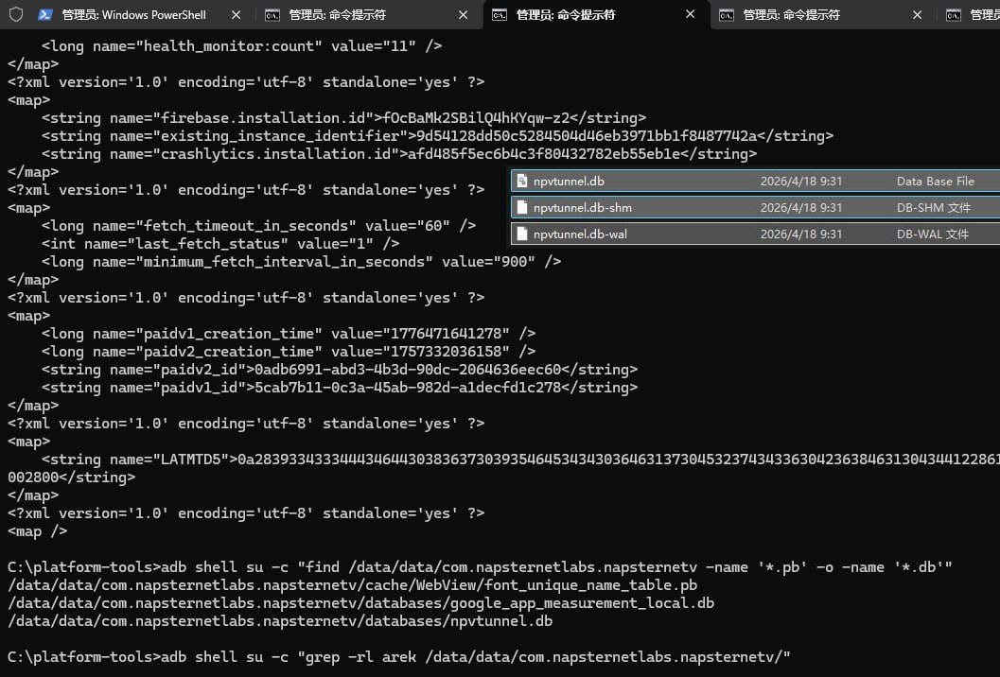
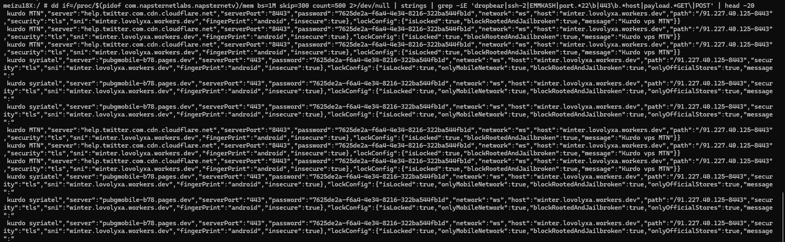
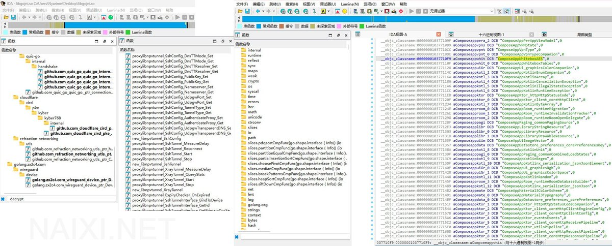

@tatanakots 中东佬那个才是真头疼，不过内存里dump出来了
他相当于是Kotlin中嵌入了Go环境的XTLS/Xray-Core，总之里面本身就是个标准的代理协议，因此能在通用客户端上使用

他相当于是Kotlin中嵌入了Go环境的XTLS/Xray-Core，总之里面本身就是个标准的代理协议，因此能在通用客户端上使用



研究了一下中东地区流行的免流工具Npv Tunnel，文件格式是 .npvt 基于V2Ray和SSH Tunnel的一个加密代理，长期以来对O2（Lebara、Giffgaff）、Vodafone、3UK等运营商绕过计费，进行所谓的漫游免流行为
该程序引用了XTLS/Xray-Core外，本质是滥用Cloudflare Workers转发vmess https://t.co/51O2iKh6QP
该程序引用了XTLS/Xray-Core外，本质是滥用Cloudflare Workers转发vmess https://t.co/51O2iKh6QP